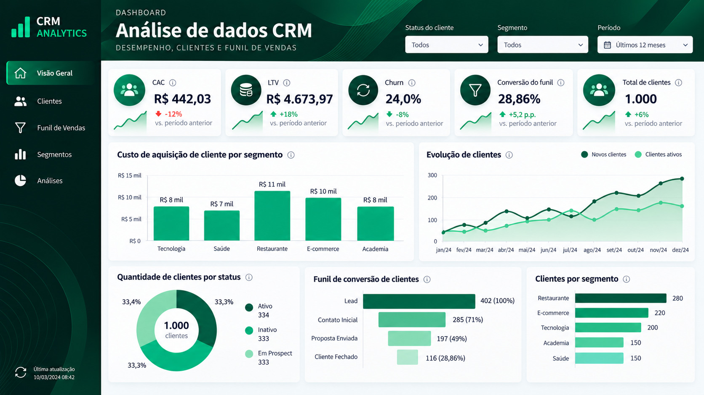

Objetivo da análise
Organizar métricas do ciclo de vida do cliente para apoiar a análise de eficiência comercial e de relacionamento.
Estudo visual de CRM Analytics com indicadores de aquisição, relacionamento e retenção de clientes, incluindo CAC, LTV, churn e conversão.
Objetivo, organização das informações e principais leituras disponíveis no painel.
Organizar métricas do ciclo de vida do cliente para apoiar a análise de eficiência comercial e de relacionamento.
Indicadores de clientes e funil comercial apresentados de forma consolidada. As telas não documentam a origem das bases ou a fórmula de cada indicador.
Desenvolvimento de uma visão analítica no Looker Studio, agrupando métricas de aquisição, retenção e conversão para leitura integrada.
A análise conjunta de CAC, LTV, churn e conversão permite discutir o equilíbrio entre adquirir novos clientes e manter relacionamentos ao longo do tempo.
